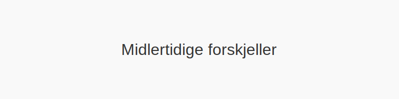

Midlertidige forskjeller oppstår når den regnskapsmessige verdien av en eiendel eller forpliktelse avviker fra dens skattemessige grunnlag. Slike avvik skaper grunnlag for utsatt skatt i balansen.

Hva er midlertidige forskjeller?
En midlertidig forskjell er forskjellen mellom en eiendel eller forpliktelses regnskapsmessige bokførte verdi og det skattemessige grunnlaget. Midlertidige forskjeller fører til utsatt skatt, da skatteeffekten tas igjen i fremtidige perioder når de regnskapsmessige og skattemessige verdiene utlignes.
Typer midlertidige forskjeller
| Type forskjell | Beskrivelse |
|---|---|
| Positiv midlertidig forskjell | Regnskapsført verdi > skattemessig grunnlag (utløser utsatt skattefordel) |
| Negativ midlertidig forskjell | Regnskapsført verdi < skattemessig grunnlag (utløser utsatt skatteforpliktelse) |
Beregning av utsatt skatt
Utsatt skatt beregnes som produktet av midlertidige forskjeller og gjeldende skattesats. For selskaper i Norge er satsen 22 % per 2024.
| Post | Beregning |
|---|---|
| Midlertidig forskjell | (Regnskapsført verdi − Skattemessig grunnlag) |
| × Skattesats (22 %) | Gjeldende selskapsskattesats |
| = Utsatt skatt | Skattebeløp som bokføres som eiendel eller forpliktelse |
Vanlige eksempler
- Avskrivninger: Ulike avskrivningssatser for regnskap og skatt (Hva er Avskrivning?).
- Varelager: Forskjeller mellom regnskapsført verdi og skattemessig verdi av varelager (Hva er Varelager?).
- Pensjonsforpliktelser: Ulike behandlinger av aktuarmessige gevinster og tap i regnskap og skatt.
- Periodisering av inntekter og kostnader: Avvik i tidspunkt for inntekts- og kostnadsføring (Hva er Periodisering i Regnskap?).
Bokføring av utsatt skatt
Utsatt skatt bokføres som henholdsvis eiendel (utsatt skattefordel) eller forpliktelse (utsatt skatteforpliktelse) i balansen.
| Konto | Debet | Kredit |
|---|---|---|
| Utsatt skattefordel | 1400 | |
| Utsatt skatteforpliktelse | 2500 |
Hvorfor er dette viktig?
En god forståelse av midlertidige forskjeller er avgjørende for å sikre korrekte skatteberegninger, balansere betalbar skatt og planlegge fremtidige likviditetsbehov.